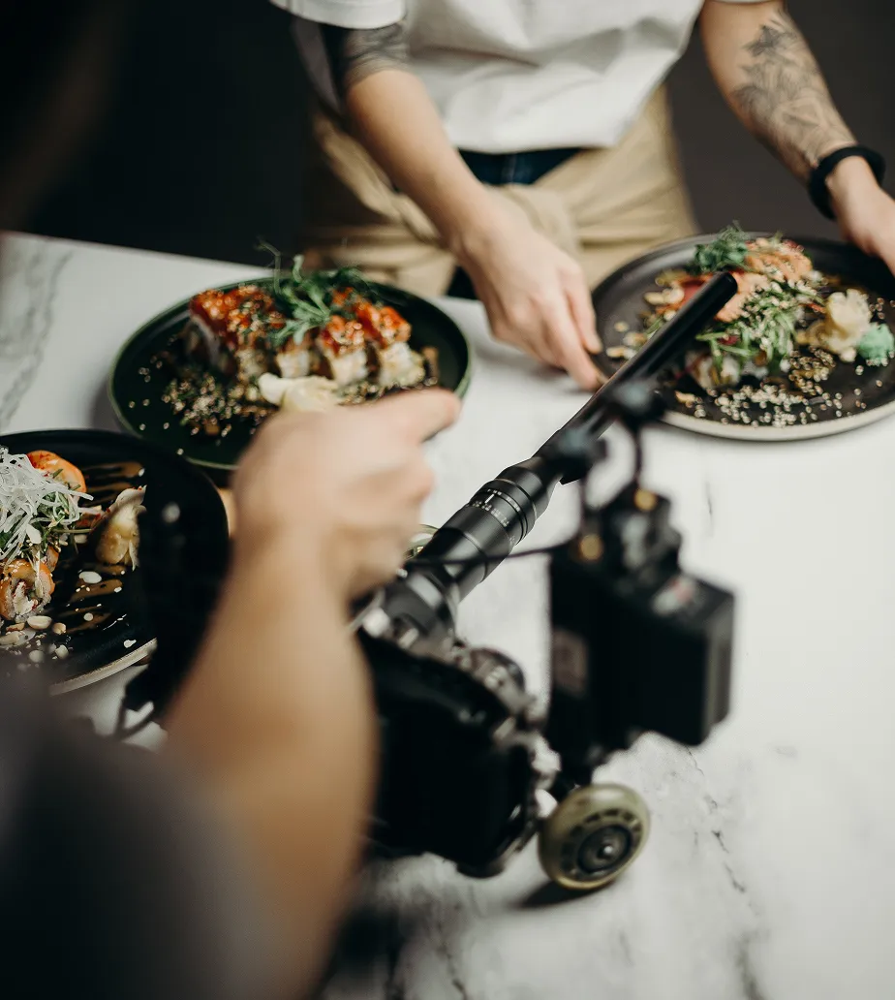

How Qitchen Redefines Flavor Harmony in Every Bite
Experience an orchestra of tastes as Qitchen sushi unveils a symphony of perfectly balanced flavors.

Experience an orchestra of tastes as Qitchen sushi unveils a symphony of perfectly balanced flavors.
Explore the meticulous artistry and dedication that create Qitchen renowned sushi perfection.
Embark on a seafood adventure, guided by Qitchen fresh and exquisite sushi creations from the sea.
Discover the heights of gastronomic delight as Qitchen sushi transports you to a new culinary realm.
Immerse in Qitchen passion for culinary excellence, where sushi is more than a dish—its an experience.